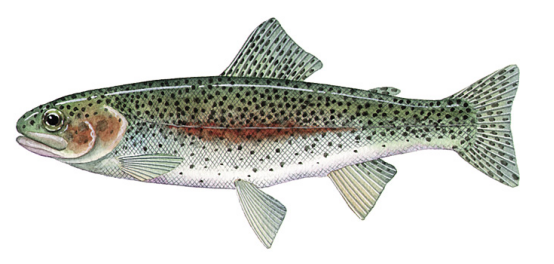

Karkarook Lake
Welcome to Karkarook ParkKarkarook Lake is a 15-hectare man-made lake located in Karkarook Park, Heatherton, in Melbourne’s southeastern suburbs. Once a former sand quarry, the site has been transformed into a peaceful urban oasis surrounded by walking trails, picnic areas, and scenic viewpoints. The lake and its surroundings offer a tranquil environment ideal for walking, cycling, birdwatching, and kayaking, making it a popular destination for families, joggers, and nature lovers.
Fishing at Karkarook Lake
Fishing at Karkarook Lake is well-suited for anglers of all skill levels. The lake is regularly
stocked with rainbow trout, especially during school holidays, and is also home to species like
redfin perch, estuary perch, golden perch, freshwater eels, and European carp. Fishing is allowed
from the shoreline and designated fishing platforms, with common baits including bread, corn, worms,
and soft plastics. The lake has depths ranging from 5 to 8 metres, making it suitable for both bank
and kayak fishing. A valid Victorian recreational fishing licence is required, and all anglers must
follow local size and bag limit regulations.
The fish species commonly found in Karkarook lake include:
Redfin Perch: A popular target species, especially in the cooler months. They respond well to soft
plastics and small spinners.

Rainbow Trout: Occasionally found in cooler stretches, especially closer to tributaries like the Plenty River. As one of the largest and most popular family fishing lakes within metropolitan Melbourne, Karkarook Lake is stocked annually with 1,000 to 2,000 rainbow trout, along with several dozen extra-large rainbow trout, which locals affectionately call "stonkers."
Silver Perch: The Silver Perch is a native Australian freshwater fish found mainly in the Murray-Darling Basin. It has a silver-grey body and prefers flowing or still freshwater environments. Often stocked for recreational fishing, it feeds on insects and algae, and can be caught using worms, small lures, or yabbies.

Common Carp: Although introduced and considered a pest, they are abundant and put up a strong fight, making them appealing to some recreational fishers.Victoria has strict regulations regarding carp fishing. Due to the severe environmental damage carp cause to local waterways, all carp caught must not be returned to the water.Carp are omnivorous fish and can be caught with almost any type of bait. Naturally, non-artificial baits tend to be significantly more effective than lures. This principle generally applies across all types of waterways.

Murray Cod: Murray Cod is Australia’s largest native freshwater fish and a highly sought-after target among anglers. Found in parts of the Murray-Darling Basin, including some upper sections of the Yarra River and its tributaries, Murray Cod prefer deep holes, submerged logs, and rocky structures. They can be caught using large hardbody lures, spinnerbaits, soft plastics, or live baits like yabbies and big worms. Heavy tackle is essential,Early mornings, late afternoons, and summer nights are the most productive times. Anglers must observe strict regulations, including a closed season from September to early December, minimum size limits, and daily catch limits. Catch and release is widely practiced to ensure the sustainability of the species.
Golden Perch:also known as "yellowbelly," is a popular native freshwater sportfish found in Australia’s inland rivers and reservoirs. Known for its powerful fight, it prefers warm, slow-moving waters with structures like submerged logs. Golden perch readily take lures and live bait, especially during warmer months, and are commonly targeted in places like the Murray River and stocked lakes across Victoria.The best way to catch them is by using soft plastics that mimic their natural prey, such as small baitfish, or by using crankbaits and spoons that imitate slightly larger fish invading their territory.

Fishing in this area is more about enjoying the serenity of the bushland and spotting wildlife than sheer volume of catches. Best results often come during early morning or late afternoon, particularly in spring and autumn. Local regulations require a Victorian Recreational Fishing Licence, and catch limits must be followed.